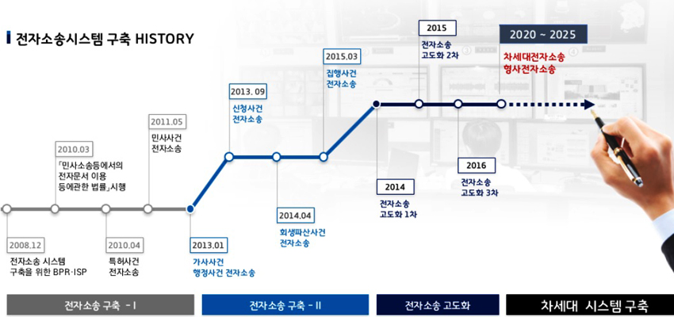
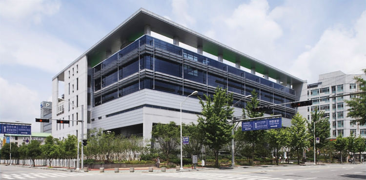
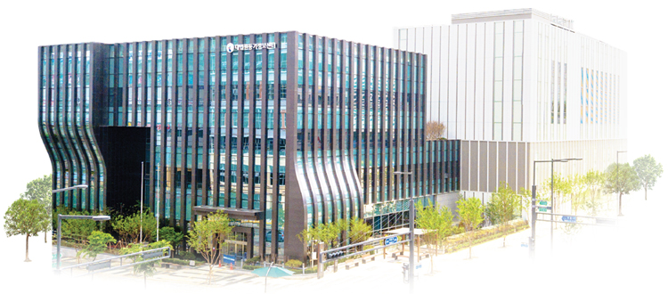

정보화
추진경과
사법부 업무에 전산시스템이 도입되면서 법원이 관장하는 재판업무, 등기업무, 가족관계등록업무, 공탁업무 등에 관하여 보다 효율적인 업무처리가 가능해졌고, 전국 단위의 초고속 인터넷망을 기초로 사법부 홈페이지 포털, 종합법률정보, 판결서 공개, 사건검색정보, 인터넷 등기정보, 경매정보, 전자가족관계등록정보, 전자공탁정보 등 다양한 대국민 사법정보 서비스를 제공할 수 있게 되었습니다. 최근에는 IT기술의 발전으로 전자문서의 생산 및 유통이 일반화되고 사법정보의 공개와 법원과의 소통에 대한 국민적 요구가 커지는 가운데, 세계 최고 수준의 사법정보화 역량을 기초로 전자소송시스템을 구축하여 국민의 높아진 기대에 부응하고 있습니다.
대법원은 1979년 한국과학기술연구소에 '사법업무 전산화를 위한 타당성 조사'를 의뢰한 것을 시작으로 법원 업무 전산화를 지속적으로 추진하고 있습니다. 1986년 민사업무의 전산처리가 가능한 민사시스템을 개발하였고, 2002년 재판사무시스템을 완비하였습니다. 2007년에는 법관의 재판업무를 지원하는 'JUSTICE'라는 맞춤형 재판지원시스템 구축을 완료하였으며, 이를 통해 재판일정 관리, 사건진행 관리, 전자적 판결서 작성업무 등 법관 업무에 관한 종합적인 지원이 가능하게 되었습니다. 대법원은 재판업무 이외에도 법원이 관장하는 등기업무, 가족관계등록업무, 공탁업무의 전산화를 위하여 첨단 전자기술을 적용한 정보시스템을 구축함으로써 법원 내외부 사용자의 업무편의를 증진시키고 있습니다. 2008년 사법정보시스템의 통합 운영을 위한 기반 시설인 대법원 전산정보센터를 건립하였고, 대전, 부산, 광주에 보조 데이터센터를 구축하여 365일 24시간 안정적인 정보시스템 운영을 계속하고 있습니다.
증가하는 정보시스템 장비의 수용 공간 마련과 화재·지진 등 각종 재난 및 재해에 대비하고, 사법 이외 등기·가족관계등록 업무수행을 위한 별도의 데이터센터 구축이 요구됨에 따라 2021. 7. 대법원등기정보센터(세종)를 개청하여 안정적으로 운영하고 있습니다. 대법원전산정보센터(분당)의 재난·재해 발생 시에도 업무 연속성 보장과 서비스 중단 피해를 최소화하기 위해 양 센터에서 가지고 있는 사법·등기·가족정보시스템의 모든 중요 데이터를 실시간 상호복제하고 있고, 이를 통해 센터 한 곳이 손상되더라도 복구가 가능하도록 백업체계를 구축하였습니다.
